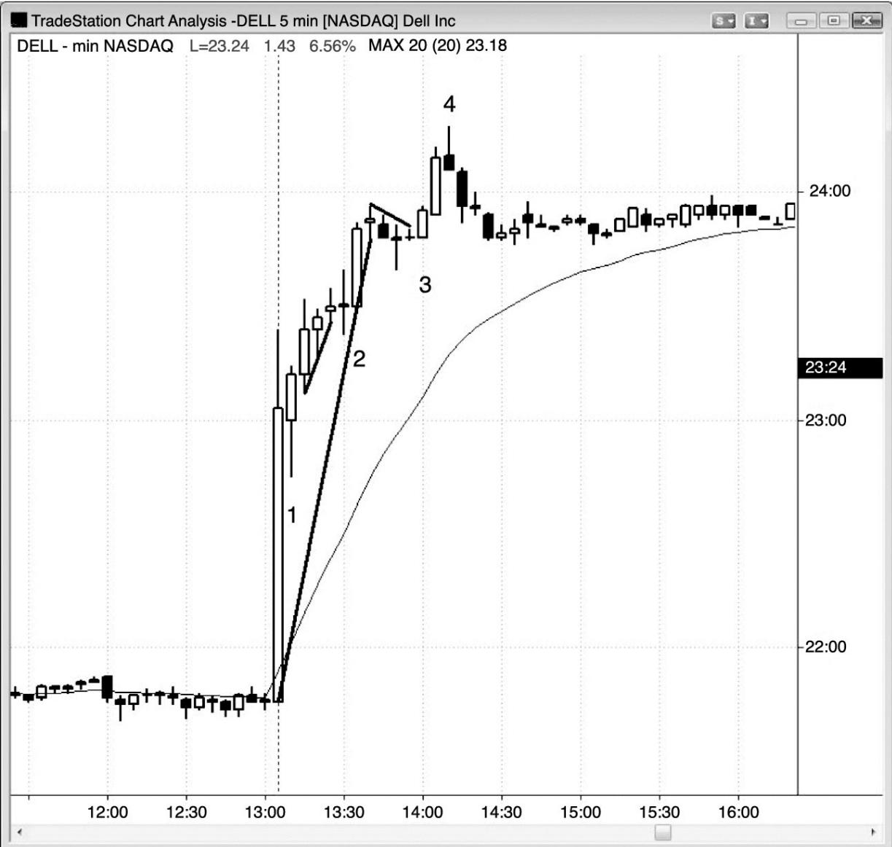
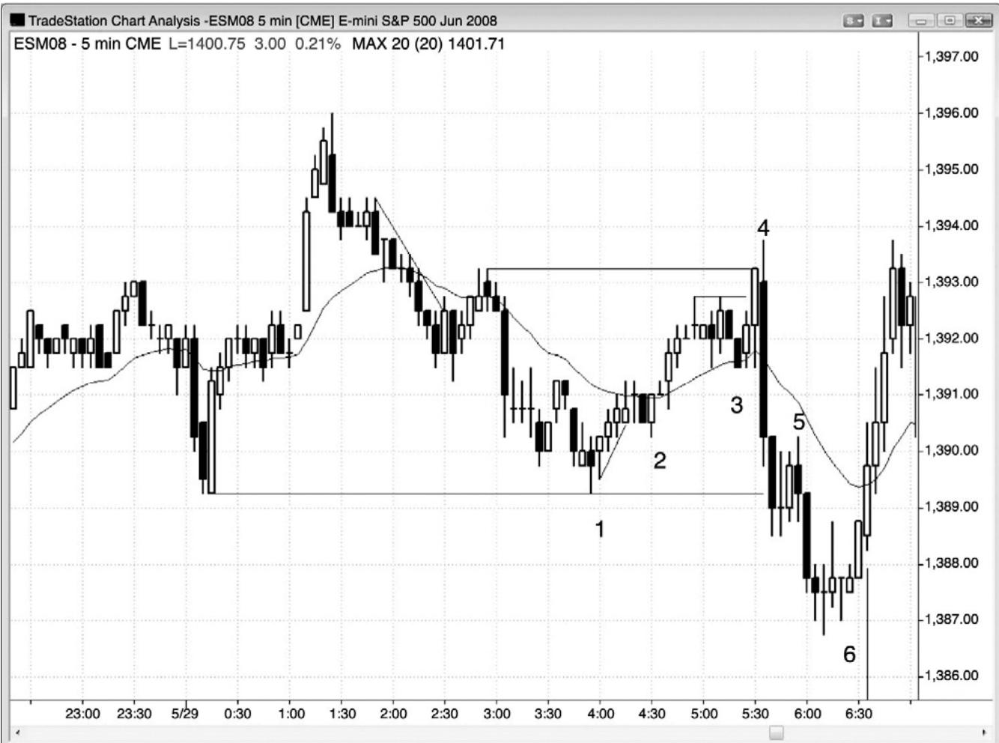
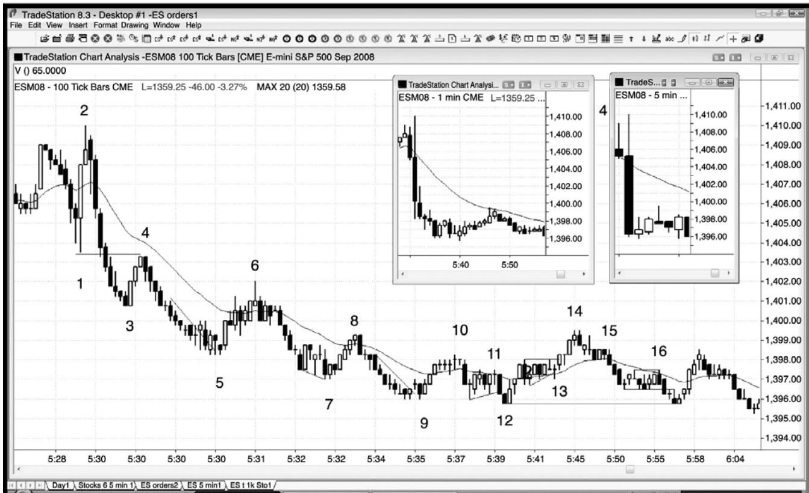
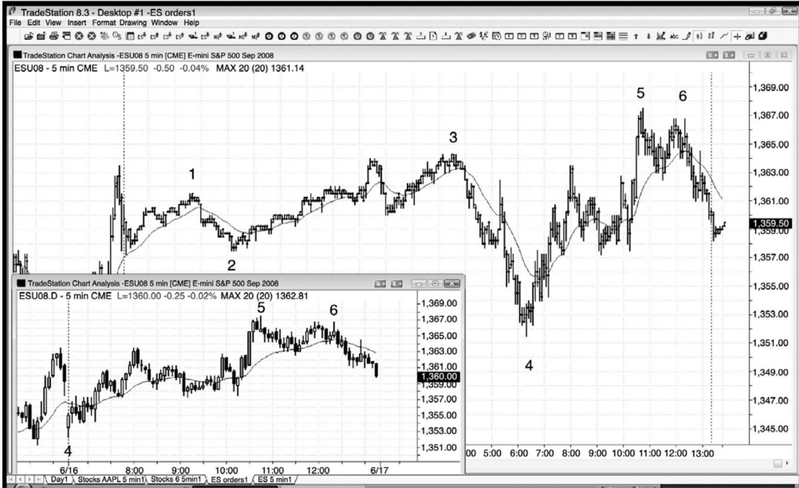

第14章 全球期货交易系统、盘前、盘后和隔夜市场¶
第 14 章 全球期货交易系统（Globex）、盘前（Premarket）、盘后（Postmarket）和隔夜市场（Overnight Market）
相同的价格行为技术适用于所有市场的所有时间，不管是白天还是晚上。有非常多老练的国际交易者，所以很多市场是一天 24 小时交易的。开市前极点常常是白天时段内测试的目标，但是在白天时段交易时，不必观察全球期货交易系统的价格，因为那几乎没有什么收获，白天时段的价格行为将给出足够多的信号。很多交易者在做日内交易时使用全球期货交易系统全天的图表，那是非常合理的。我喜欢使用白天时段的图表，因为白天时段图表上延续了
当一只股票在收盘后发布收益报告时，有些交易者试着去交易，因为大的运动看起来会提供非常高的获利潜能，但是这些运动是很难用来刮头皮的，大部分交易者不应尝试。那些运动通常因为太快而让你无法正确的读图并下单，止损入场的滑移价差非常大，并且会出现大幅回撤、反转，而且一旦你明白正在发生什么时，市场常常突然停止运动。
图 14.1 收盘后的交易
P163¶

P164
如图14.1所示，戴尔（Dell）在收盘后公布了一份收益报告，看起来提供了一些盘后交易机会，但是，对于大部分交易者来说，那些运动通常太难用于交易。棒 1 是向上突破后的一条高点1多头内包棒，在它的高点上方1便士处形成一个做多架构。
棒 2 是那条外包棒高点上方 1 美分处的一个做多架构，它也是向下突破一条微型多头趋势线后的向上反转。
棒 3 是一个高点 1 突破做多架构，之前出现了重要的趋势线突破。
棒 4 是一条空头反转棒，也是买进高潮之后的一个最终旗形做空架构，此前市场向上突破了一条多头通道。另外，棒 3 旗形突破了一条很长的多头趋势线，表明空头正在积聚一点力量。仅在首先出现趋势线突破的情况下才可对强趋势做反向交易。另外，强趋势中的逆势交易需要一条 5 分钟（不是 3 分钟或 1 分钟）反转棒。在盘后时间的剩余时间里，市场在一
段紧凑的交易区间内横向运动。

盘前是可以交易的，但是，在纽约股票交易所于太平洋标准时间上午6:30开盘前的一两个小时里，通常没有多少入场（见图 14.2）。不过，上午 5:30 常常会有报告发布，引起快速的趋势和反转。
棒 1 是一个楔形做多架构和一个双重底，但是交易者们必须持有头寸经过棒 2 回撤才能获利。楔形底（或三次下推，或者给这种形态所取的其他名称）通常引起两条腿上涨。
棒 2 是一个更高低点，是一个小型趋势线反转。
棒 3 是均线处的一个高点 2。
报告致使市场产生一个向上的假突破，然后形成一条外包下跌棒（棒 4）。交易者们会在棒 3 下方做空，那里会有很多多头设定的止损。
棒 5 是一次突破回撤。
棒 6 是一个二次入场，市场第二次尝试从一个新的波段低点（棒 5 是第一个波段低点）

P165
如图 14.3 所示，对于太平洋标准时间上午 5:30 的失业率报告，电子迷你的反应很不充分。这是一张 100 跳动图，其中每一棒代表着 100 笔交易，独立于交易的成交量和时间。注意，棒 1 和棒 5 之间的 30 棒都发生在一分钟之内，原因是报告引起的快速价格运动。这些棒线形成的如此迅速，以至于除了市价单之外很难或不可能采用其他方式交易。理论上可以根据价格行为做很多获利的刮头皮，但是大部分交易者决不应该尝试这样做。给出这张图的唯一目的是展示一下标准形态是普遍存在的。插图同一 30 分钟交易的是 1 分钟和 5 分钟图。
图 14.4 全球期货交易系统和白天时段常常形成不同架构
向上反转。¶

如图 14.4 所示，全球期货交易系统 24 小时棒线图，形成一个扩张三角形，在棒 5 高点结束（棒 1 和棒 3 是头两次上推），插图所示为使用相同编号的白天时段。白天时段的交易者不需要看到全球期货交易系统的扩张三角形再在棒 5 处做空。棒 5 取代了昨日高点，并且向均线回撤。然后市场向一个更低高点反弹，在棒 6 双重顶空头旗形形成一个做空架构（第一个顶部形成于 5 棒之前）。
P166